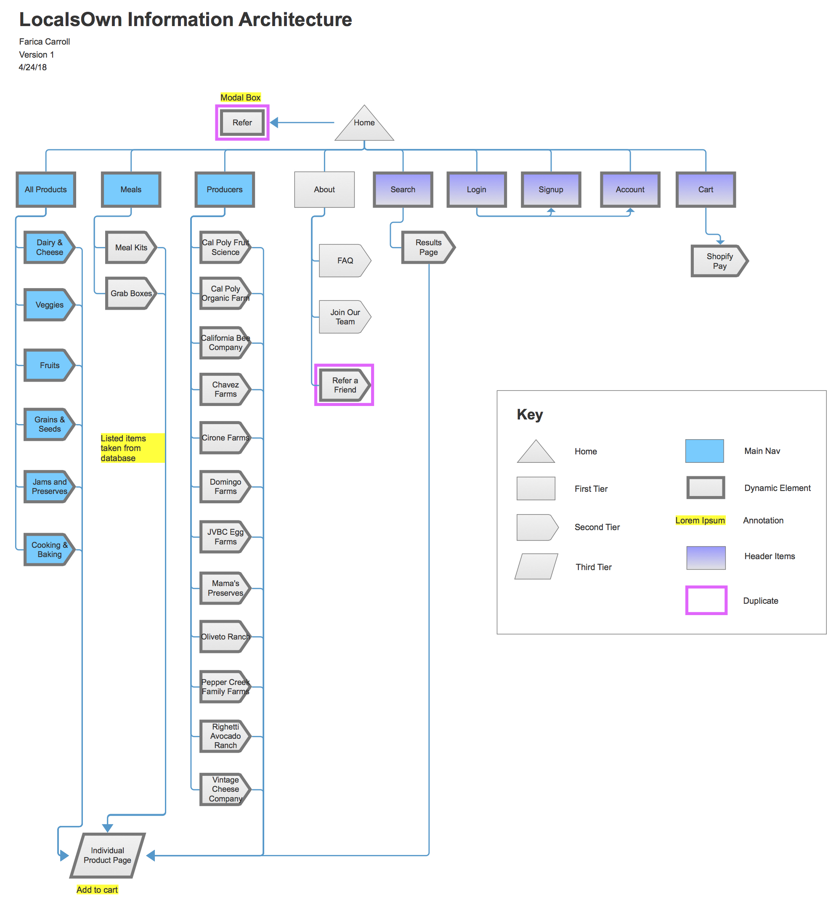
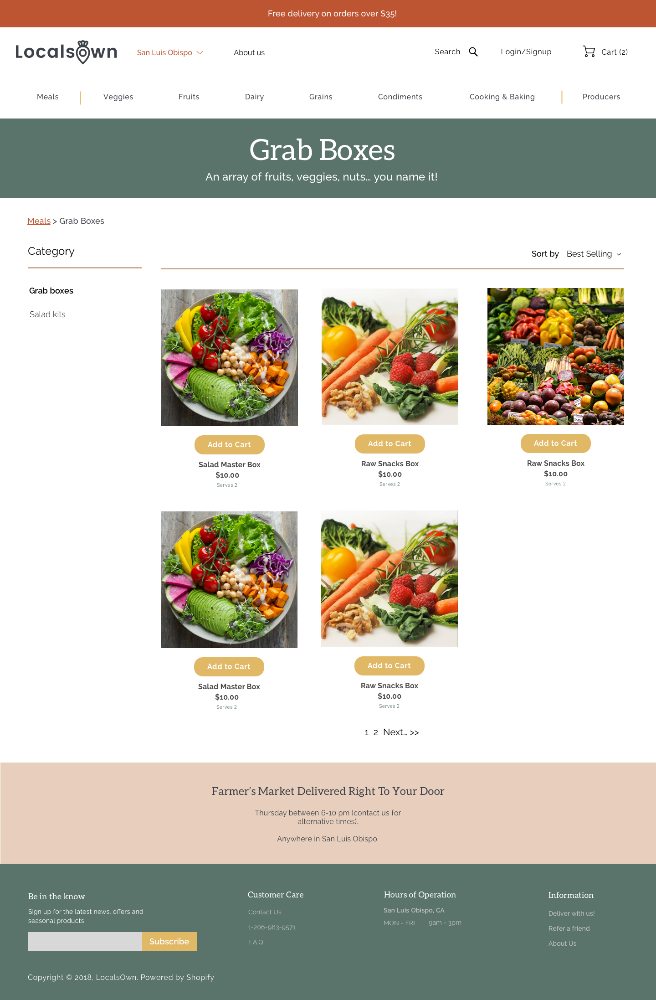

May 2018
LocalsOwn
Website Design
Role
Team
Software
Skills
UI/UX Designer, Front-End Development
Jessica Rose
Axure, Sketch, Brackets
Web Design, HTML/CSS, Flexbox

Role
Team
Software
Skills
UI/UX Designer, Front-End Development
Jessica Rose
Axure, Sketch, Brackets
Web Design, HTML/CSS, Flexbox
LocalsOwn is a San Luis Obispo startup who wanted to bring Farmer’s Market to people’s doorstep, but we needed to differentiate it from other grocery delivery services in the market. They needed improvement on a easy-to-use navigation for shopping. We redesigned the navigation of the website to improve on the discoverability of the products and producers. We grouped the information of products to be better accessible by a new user. This was to drive new users to click around more and explore the products they offered.
We started with an information architecture to help map out the structural layout of the website. The info architecture helped us have a bird’s eye view of every page of the entire site. This was key in designing a navigation that would make various information easily accessable.
We sketched out quick wireframes to layout the necessary content for the website. The key pages we chose to design for the scope of this project were the homepage, a product list page, an individual product page, and sign-in/sign-up page, and a producer page.
We highlighted a top navigation menu bar that displayed the key categories a customer could purchase from the farmer’s market to incentivize them to ponder the various food items they could purchase at the farmer’s market instead. Our intention was to prevent from the food categories being “out of sight, out of my mind”.
We quickly translated the sketches into low fidelity wireframes so we could nail down the layout of the website. It displays the visual hierarchy of information without any distractions like typefaces, colors, and visuals.
These are a number of the high fidelity mocks we designed to solidify the colors, typography, images, and other visual elements. Our client wanted a website that communicated the mood of a farmer’s market with birds chirping, wooden crates, and burlap bags. We chose this color scheme because it conveyed a warm tone. We chose a serif font for the headers and a sans-serif font for the body text to create contrast. The serif font also communicates a more traditional, old-school feeling which farmer’s markets are.
My partner and I then split up coding these pages among the two of us using Brackets.